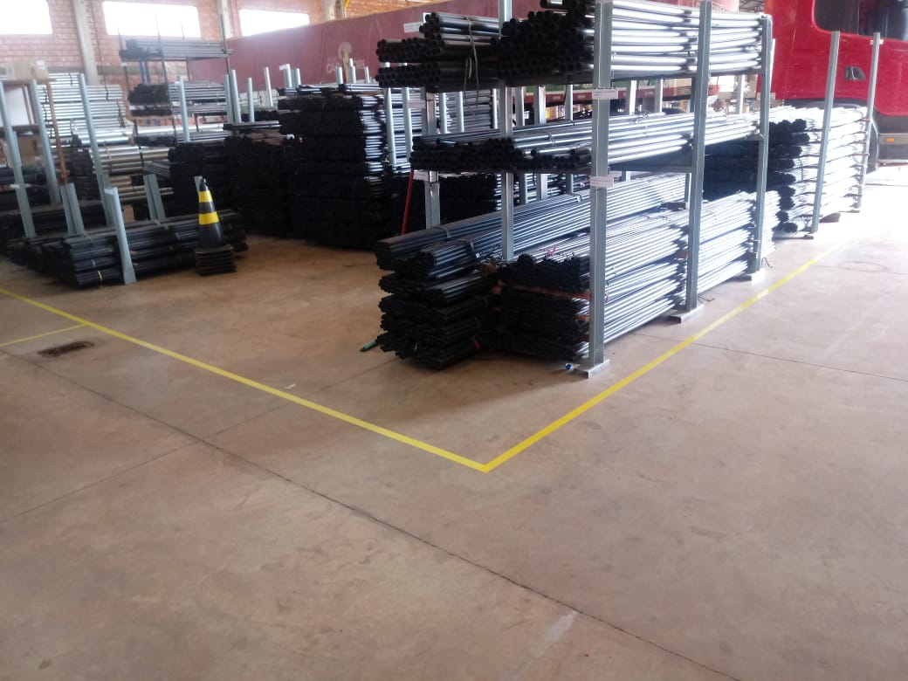
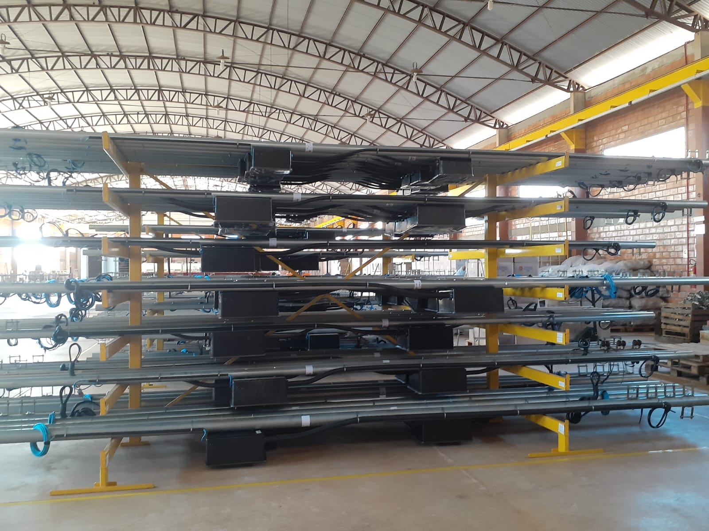

Raddec industria e Comercio Ltda
Avenida Pedro Caetano Rodrigues, nº 5443
Distrito Industrial Augusto Bortoli Razia, Rondonópolis - MT
CEP 78.746-702
| Pagina Inicial |
|Historico |
|Gestão de Pessoas |
|Central de Vendas |
|Fale Conosco |
Política de Qualidade
Atender aos requisitos de nossos clientes no fornecimento de
produtos confiáveis e de qualidade, que garantam além da satisfação, a proteção de vidas.
Buscar a melhoria contínua por meio de um Sistema de Gestão da Qualidade efetivo,
que englobe parceiros, força de trabalho, fornecedores de forma comprometida e capacitada.
Aprimorar de maneira eficaz e continuamente nossos processos através de
treinamento de nossos colaboradores, atendendo a todos os requisitos normativos.

